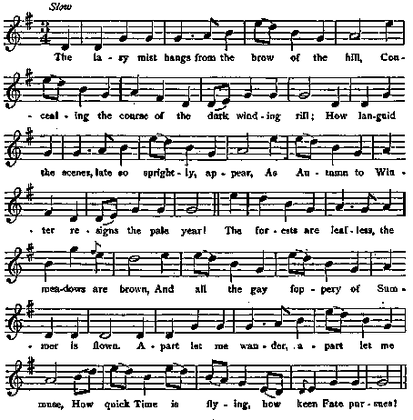
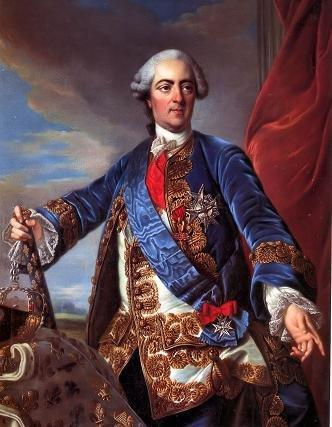

Young Edward the Prince
Le Jeune Prince Edouard
By the Rev. John Skinner (1721 - 1807)
from Peter Buchan's MS CollectionTune - Mélodie
"The lazy Mist hangs from the Brow of the Hill"
Sequenced by Christian Souchon

|
To the tune:
The air is "The Brow of the Hill", as stated in Peter Buchan's MS. Collection ( quoted by G.S. McQuoid in his "Jacobite Songs and Ballads", 1888, Song N° 113 p. 240). This Irish tune printed in Oswald's Caledonian Pocket Companion c. 1759, xiii - 20 |
A propos de la mélodie:
Sur l'air "L'escarpement de la colline", selon l'indication de Peter Buchan dans son recueil manuscrit, cité par G.S. McQuoid dans ses "Chants et Ballades Jacobites", 1888, chant N°113, p.240. Cet air irlandais a été publié dans le Vadémécum Calédonien d'Oswald, vol. xiii - 20, vers 1759. |

|
YOUNG EDWARD THE PRINCE.
1. In Paris fair town liv'd great Gallia's lord, Rever'd by his neighbours, by his subjects ador'd, Whose fleets and whose armies great wonders had wrought, And spread terror and triumph wherever they fought. Wide kingdoms obey'd the proud victor's command, And bow'd to the great grandson of Lewis-a-Grand. (twice) 2. Young Edward the Prince, of Stuart's old race, Who could conquer with meekness and suffer with grace, He would oft times appear at the monarch's gay court, And depended on France for a princely support His aid he oft claim'd, as his father had done, To restore him again to his ancestor's throne. 3. The monarch consented, and promis'd, and vow'd, By all that was great, by all that was good, To assist the young Edward, thus forward and bold, With the choice of his forces and half of his gold. And now all his subjects expected once more To see him again on Britannia's shore. 4. But as soon as Hanover and Lewis were friends, Then honour and justice must yield to his ends, The monarch, as false as the tempest that blows, Forgets all his former engagements and vows. And now the young Edward, thus falsely betray'd, Must leave the French kingdom, elsewhere to seek aid. 5. Take heed, ye brave heroes of Britain's fair isle, How ye trust in French faith in your present exile, For the French they are fickle, and guineas are strong, And may tempt even Christian kings to do wrong. Then rely not on Lewis for help nor defence, But remember the fate of young Edward the Prince. Source: G.S. McQuoid's "Jacobite Songs and Ballads", 1888, Song N° 113 p. 240. |
 Louis XV (1710 - 1774) |
LE JEUNE PRINCE EDOUARD
1. Résidant à Paris, puissant seigneur des Gaules. Ayant des tiens l'amour, des princes le respect. Tes armes et tes nefs firent de grandes choses. Tu répands la terreur et glanes les lauriers. Et l'on voit sous ta loi les plus puissants royaumes, Arrière petit-fils du grand Louis, s'incliner. (bis) 2. Le jeune Prince Edouard a souffert avec grâce, Lui qui sut se montrer un généreux vainqueur. Il tenta d'obtenir d'un allié de sa race, En venant à ta cour l'appui de ta grandeur. Ton aide il demanda, comme avant lui son père, Pour recouvrer le trône de ses géniteurs. 3. Monarque tu promets, tu consens et tu jures Par tout ce que l'on tient pour saint et pour sacré D'assister Edouard, à l'âme fière et pure. Les forces de son choix, de ton or la moitié Sont à lui. C'est pourquoi tes sujets conjecturent Qu'on le verra bientôt sur le rivage anglais. 4. Oui mais voilà que Louis devient l'ami d'Hanovre. Honneur et droit font place à la raison d'état Prince, l'ouragan qui souffle n'est pas plus fourbe Que toi dont les engagements ne comptent pas. Ignominieusement trahi l'on voit le pauvre Quitter la France en quête et d'une aide et d'un toit. 5. Méfiez-vous, les héros de l'ïle de Bretagne, Qui faites en exil confiance à ces Gaulois! Ce sont des inconstants: qui les soudoie les gagne Et le roi Louis lui-même, aussi chrétien qu'il soit. N'attendez pas de lui quelque aide partisane Pensez au Prince Edouard qui faillit être roi. (Trad. Christian Souchon(c)2010) |